∞
объекты · математики
математики
43 персоны · люди за формулами. каждый нашёл что-то чего не было.
§01
основания · геометрия · анализ
11
математик
→
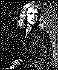
Ньютон
придумал физику за чумной год. исчисление · гравитация · Principia.
1643–1727 · механика · математика
математик
→
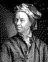
Эйлер
самый продуктивный математик в истории. ослеп — и стал работать ещё продуктивнее.
1707–1783 · анализ · теория чисел
математик
→
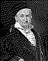
Гаусс
«принц математики». в 18 лет доказал что 17-угольник строится циркулем.
1777–1855 · теория чисел · статистика
математик
→
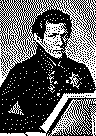
Лобачевский
сломал евклидову геометрию. параллельные пересекаются — и это работает.
1792–1856 · неевклидова геометрия
математик
→
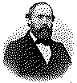
Риман
согнул пространство. единственная статья по теории чисел — и нерешённая задача на 165 лет.
1826–1866 · геометрия · теория чисел
математик
→
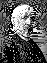
Кантор
создал теорию бесконечных множеств. коллеги считали его еретиком. умер в психиатрической клинике.
1845–1918 · теория множеств
математик
→
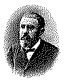
Пуанкаре
последний универсальный математик. открыл хаос исправляя собственную ошибку.
1854–1912 · топология · хаос
математик
→
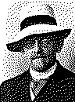
Гильберт
23 проблемы · формализм · «мы должны знать». Гёдель доказал что не всегда.
1862–1943 · основания математики
математик
→
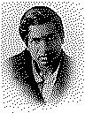
Рамануджан
самоучка из Индии. формулы приходили во сне. умер в 32 года. тетради изучают до сих пор.
1887–1920 · теория чисел
математик
→
0/1
Тьюринг
придумал компьютер до компьютера. взломал Энигму. осуждён за то кем был.
1912–1954 · логика · информатика
математик
→
Перельман
доказал гипотезу Пуанкаре. отказался от $1 000 000 и медали Филдса.
1966 — · топология
§02
вероятность
9
математик
→
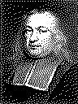
Ферма
великая теорема на полях учебника. любитель который изменил математику вечерами после суда.
1607–1665 · теория чисел · вероятность
математик
→
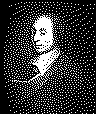
Паскаль
треугольник · вероятность · пари · мистик. умер в 39. успел многое.
1623–1662 · вероятность · мистика
математик
→
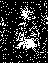
Гюйгенс
придумал математическое ожидание. первая книга по теории вероятностей. ещё открыл кольца Сатурна и маятниковые часы.
1629–1695 · вероятность · механика · астрономия
математик
→
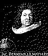
Якоб Бернулли
доказал что казино выигрывает всегда. вычислил e. опубликован посмертно.
1655–1705 · теория вероятностей
математик
→
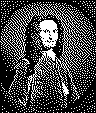
де Муавр
нашёл нормальное распределение считая шансы для игроков. предсказал дату своей смерти математически.
1667–1754 · вероятность · нормальное распр.
математик
→
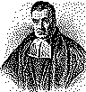
Байес
теорема Байеса · обратная вероятность · опубликована посмертно.
1701–1761 · теория вероятностей
математик
→
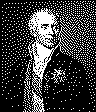
Лаплас
систематизировал вероятности. «я не нуждался в этой гипотезе».
1749–1827 · небесная механика · вероятность
математик
→
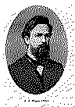
Марков
цепи без памяти · закон больших чисел для зависимых · считал буквы у Пушкина.
1856–1922 · теория вероятностей
математик
→
Колмогоров
три аксиомы вероятности · колмогоровская сложность · 1933.
1903–1987 · теория вероятностей
§03
статистика
12
математик
→
Гальтон
регрессия к среднему · корреляция · доска-квинканкс · и тень евгеники.
1822–1911 · статистика · антропометрия
математик
→
Пирсон
латинский алфавит выборки · корреляция · χ² · Biometrika. заменил причину корреляцией.
1857–1936 · биометрия
математик
→
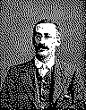
Госсет
t-распределение · Student · статистика малых выборок на пивоварне Guinness.
1876–1937 · математическая статистика
математик
→
Фишер
греческий алфавит параметров · ANOVA · p-value · планирование экспериментов.
1890–1962 · статистический вывод
математик
→
Нейман
доверительный интервал · лемма Неймана–Пирсона · проверка гипотез.
1894–1981 · математическая статистика
математик
→
Вальд
ошибка выжившего · последовательный анализ · статистические решения.
1902–1950 · статистика · теория решений
математик
→
⊟
Тьюки
разведочный анализ · боксплот · джекнайф · слова «бит» и «software».
1915–2000 · статистика · анализ данных
математик
→
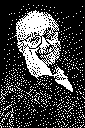
Бокс
«все модели неверны, но полезны» · факторные планы · поверхность отклика.
1919–2013 · планы экспериментов
математик
→
Кокс
не «сколько», а «когда» · пропорциональные риски · время до события.
1924–2022 · выживание
математик
→
Перл
причинность стрелками · do-исчисление · лестница причин.
р. 1936 · причинность · ИИ
математик
→
Эфрон
бутстрэп · выборка вытаскивает себя · эмпирический байес.
р. 1938 · математическая статистика
математик
→
Δ
Рубин
потенциальные исходы · что было бы без теста · каркас каузальности.
р. 1943 · каузальный вывод
§04
теория игр · поведение
7
математик
→
Рапопорт
око за око · победитель турниров Аксельрода · теория конфликтов · пацифизм.
1911–2007 · теория игр
математик
→
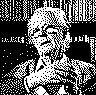
Мейнард Смит
ESS · ястреб-голубь · «Evolution and the Theory of Games» · буржуа.
1920–2004 · эволюционная теория игр
математик
→
Канеман
эвристики и искажения · теория перспектив · Система 1 / 2 · Нобель 2002.
1934–2024 · поведенческая экономика
математик
→
T
Тверски
репрезентативность · проблема Линды · якорение · половина дуэта с Канеманом.
1937–1996 · когнитивная психология
математик
→
Аксельрод
турниры 1980–81 · «The Evolution of Cooperation» · четыре свойства сильной стратегии.
род. 1943 · политология
математик
→
Талеб
чёрный лебедь · антихрупкость · неэргодичность · шкура на кону · Incerto.
род. 1960 · риск · неопределённость
математик
→
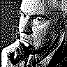
Новак
Pavlov · великодушное око за око · пять правил эволюции кооперации.
род. 1965 · эволюционная биология
§05
русская школа · учебники
4
математик
→
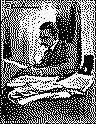
Киселёв
школьная геометрия и алгебра · учебник, переживший век.
1852–1940 · педагогика
математик
→
Фихтенгольц
трёхтомный курс матана · матолимпиады · учитель Вентцель.
1888–1959 · анализ
математик
→
Д
Демидович
4000+ задач по матану · «АнтиДемидович» · спутник Фихтенгольца.
1906–1977 · задачники
математик
→
В
Вентцель
теория вероятностей · ученица Фихтенгольца · писательница И. Грекова.
1907–2002 · тервера · проза